Schau doch mal rein...
Aus der Vielzahl deutscher, österreichischer und Schweizer Mailboxen haben wir 14 Stück ausgewählt, in die Sie einmal einen Blick werfen sollten. Hier finden Sie Kontakte, Tips und Tricks und gezielte Informationen.
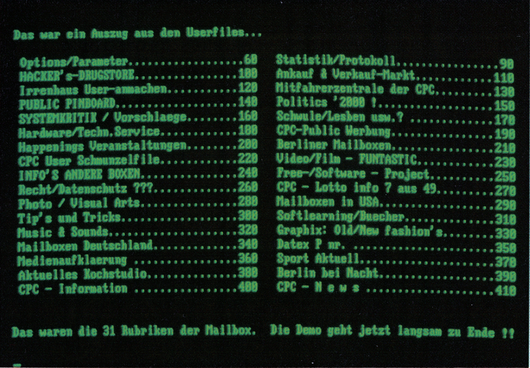
Telefon: 030/2118390,
Parameter 7N1
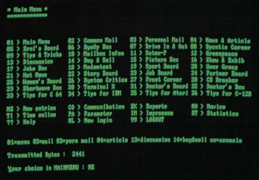
Telefon: 0211/208572,
Parameter: 7N1
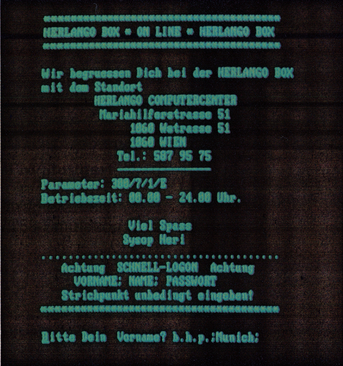
Telefon: 0043-222/5879575
Parameter: 7N1
Standort: Wien
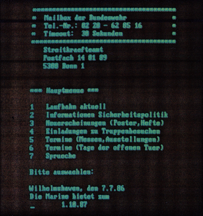
Telefon: 0228/628516
Parameter: 8N1
Mailbox des Streitkräfteamtes
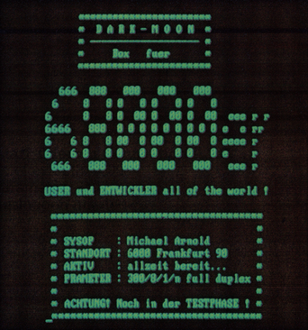
Telefon: 069/784797
Parameter: 8N1
Spezielle 68000er-Anwendung
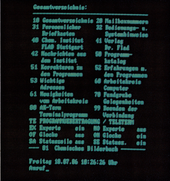
Telefon: 0711/634768
Parameter: 8N1
Chemieprogramme zum Abrufen
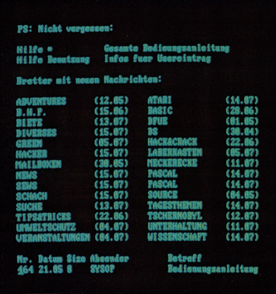
Telefon: 0203/767613
Parameter: 8N1
Bedienungsanleitung mit »Hilfe«
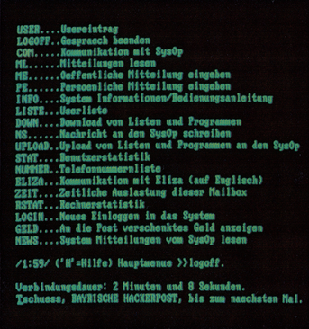
Telefon: 0251/619054
Parameter: 8N1
Zeitweise auch 1200/75 Bit/s
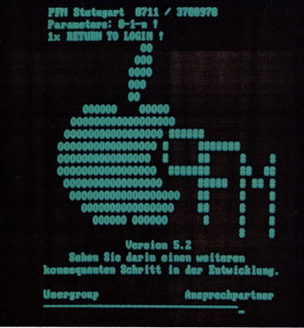
Telefon: 0711/3700978
Parameter: 8N1
VT52-Emulation wählbar
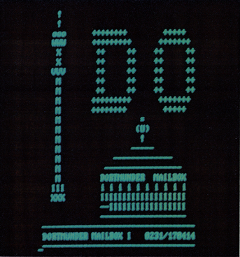
Telefon: 0231/170414
Parameter: 8N1
Btx-Leitseite: *925003#
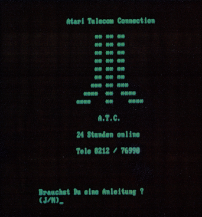
Telefon: 0212/76990
Parameter: 8N1
Ausloggen mit »log«
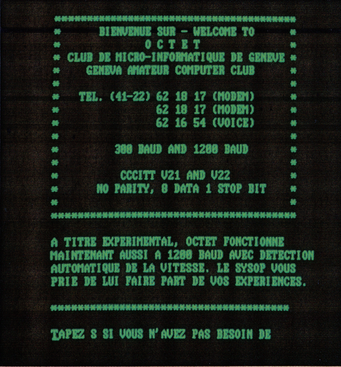
Telefon: 0041-22/621817
Parameter: 8N1/CCITT V21 und V22
Schweizer Box in franz. Sprache
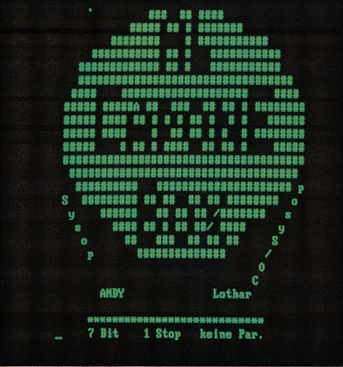
Telefon: 08121/41477
Parameter: 7N1
Computer: C 64
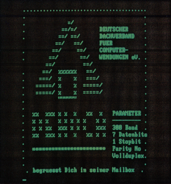
Telefon: 05722/3848
Parameter: 7N1
Deutscher Dachverband für Computeranwendungen e.V.